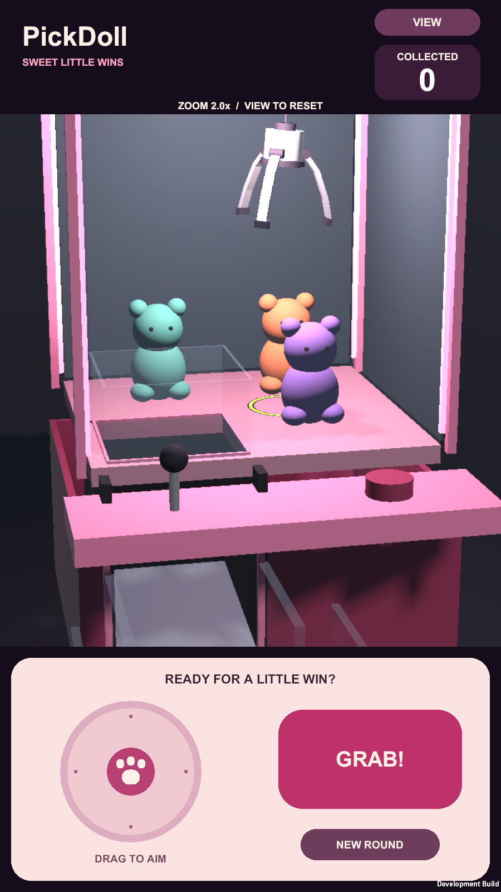
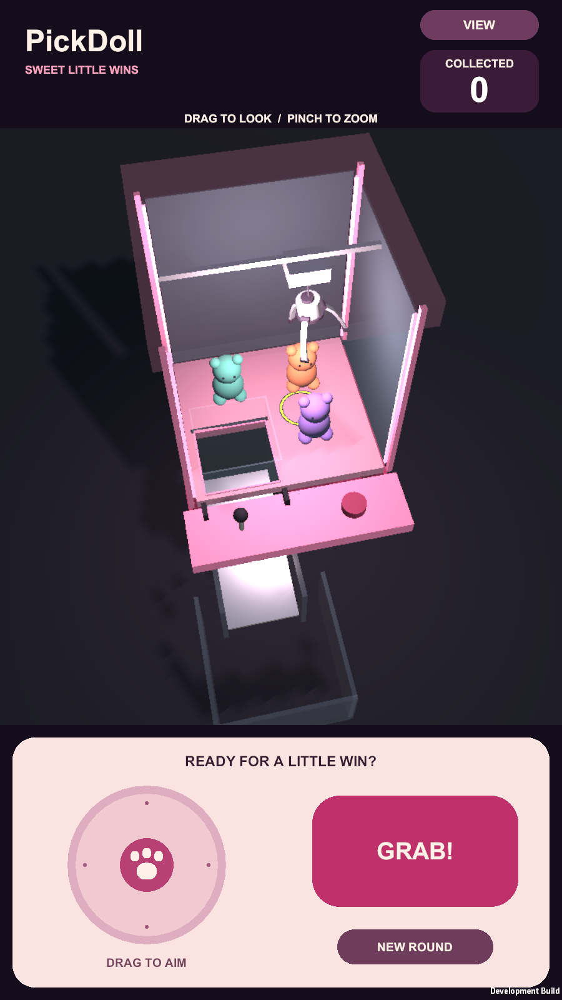
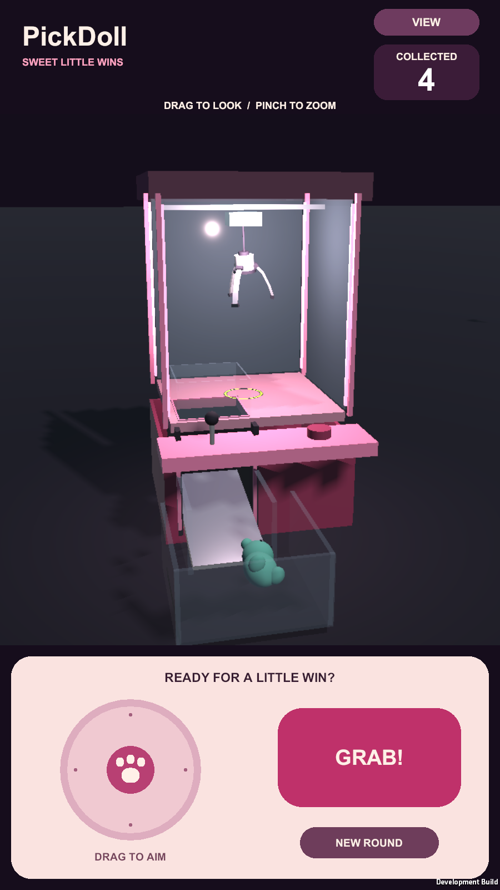
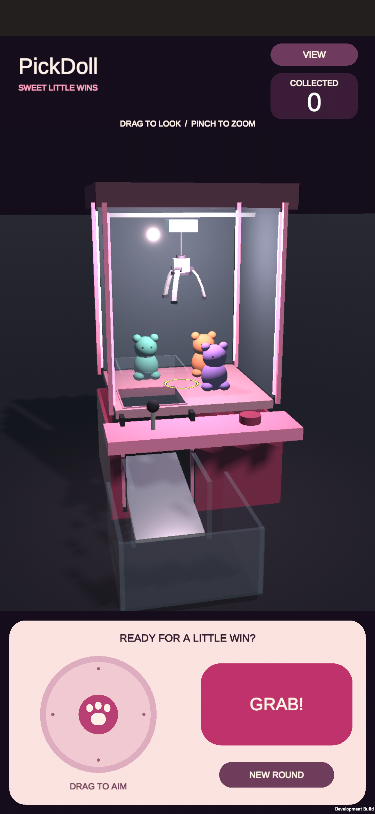
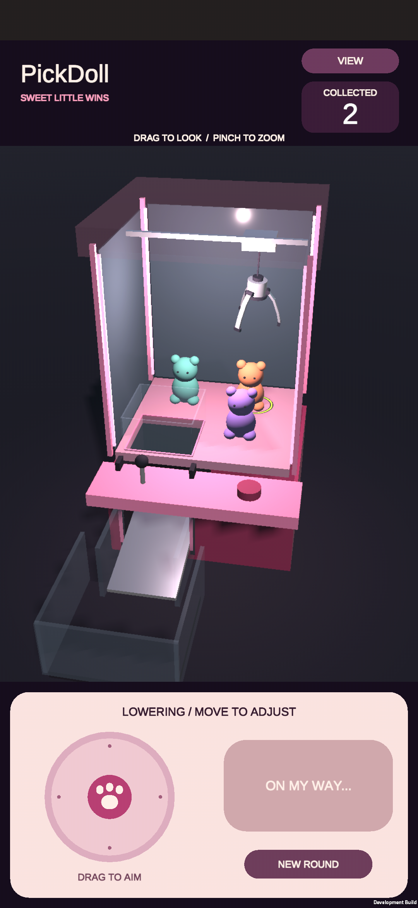

짧고 넓은 집게,
손끝으로 부드럽게.
합의한 6주차 변경
| 항목 | 적용 |
|---|---|
| 갈고리 약 67% | 손가락 경로 길이를 2/3로 단축. 충돌체·질량·그립과 하강 끝높이를 함께 조정했다. |
| 개방 폭 확대 | 기준 열린 자세의 최대 손끝 사이 거리 0.084 → 0.255 월드 단위. 벌림 각도에 맞춰 관절 기준 자세도 다시 생성한다. 벽에 닿은 손가락은 개별 관절로 반응한다. |
| 흔들림 감쇠 | 본체 각 감쇠 1 → 6, 선형 감쇠 0.12 → 1.5. 관성 회전과 움직일 때 흔들리는 물리는 유지한다. |
| 터치 드래그 조작 | 방향 버튼·PRECISION 토글을 없애고 조이스틱으로 교체. 작은 드래그는 느리게, 끝까지 드래그하면 일반 속도. 손을 떼거나 앱 전환·화면 변경 시 입력 해제. |
| 큰 GRAB·조작부 | 둥근 크림색 패널·분홍색 발바닥 조이스틱·큰 GRAB과 상태 피드백으로 구성했다. NEW ROUND는 별도 보조 버튼이다. |
| 상단·기둥 | 상단 판넬을 투명 재질(alpha 0.13)로 변경하고 기둥 너비를 0.045 → 0.024로 줄였다. 전시 공간 유리벽 충돌은 유지한다. |
| 핀치 줌 | 게임 화면의 두 손가락으로 1–2배. 한 손가락은 시점 회전, VIEW는 기본 배율 복귀. 카메라를 기계 안으로 이동시키지 않고 시야각으로 확대하며 조작 UI 크기는 유지한다. |
집기·배출 회귀 보완
짧아진 집게가 인형 머리를 밀지 않도록 하강 높이를 보정했다. 구석 검사는 열린 집게를 벽과 겹치도록 순간 배치하는 대신 중앙에서 실제 이동해 접근한다. 새 집게의 놓는 자세에서도 배출되도록 하부 조작판을 얇게 하고 통로 벽 마찰을 줄였다. 인형을 붙이거나 순간 이동시키거나 획득을 강제로 처리하지 않는다.
기본 세 위치와 세 구석의 지정 조준·일반 그립에서 집기·자동 배출·집계가 모두 통과했다. 실제 플레이 승률을 뜻하지 않으며 약한 그립의 변동은 유지한다.
최종 PC 실행 화면



검증 범위
에디터의 무부하 비교에서는 같은 초기 충격 후 3–4초 구간의 본체 수평 변위 최댓값이 0.0142 → 0.0063, 수직축 회전 속도 최댓값이 0.1349 → 0.0005로 감소했다. 형상·질량·감쇠를 함께 바꾼 전체 집게의 비교이며 실제 운반 중 모든 흔들림의 감소율을 보장하는 값은 아니다.
에디터 물리 검사 원문
PASS shorter_wider_claw=True; length_scale=0.667; tip_span 0.084->0.255 decay_after_same_kick=True; tail_sway 0.0142->0.0063; tail_twist 0.1349->0.0005 physical_hole_clear=True gravity_drop orientation=0: delivered=True; pos=(-0.23, 0.14, -1.18); entered=True; count=1; events=1 gravity_drop orientation=90: delivered=True; pos=(-0.20, 0.14, -1.08); entered=True; count=2; events=2 gravity_drop orientation=180: delivered=True; pos=(-0.23, 0.14, -1.10); entered=True; count=3; events=3 open_before_press=3; angles=-1.4,-1.8,-1.6 after_close prize=(-0.20, 0.73, 0.16); hub=(-0.20, 0.97, 0.16); angles=-20.4,-19.7,-20.2; targets=-37.0,-37.0,-37.0 at_return prize=(-0.20, 1.09, 0.16); hub=(-0.20, 1.36, 0.16); angles=-25.2,-23.6,-24.5 apex=1.102; returned=True automatic_cycle at=(-0.20, 0.16): success=True; phase=Ready; prize=(-0.10, 0.14, -1.13); count=4 open_before_press=3; angles=-1.4,-1.8,-1.6 after_close prize=(0.17, 0.73, -0.16); hub=(0.17, 0.97, -0.16); angles=-20.4,-19.7,-20.2; targets=-37.0,-37.0,-37.0 at_return prize=(0.17, 1.09, -0.16); hub=(0.17, 1.36, -0.16); angles=-25.2,-23.4,-24.6 apex=1.100; returned=True automatic_cycle at=(0.17, -0.16): success=True; phase=Ready; prize=(-0.39, 0.14, -1.11); count=5 open_before_press=3; angles=-1.4,-1.8,-1.6 after_close prize=(0.18, 0.73, 0.16); hub=(0.18, 0.97, 0.16); angles=-20.4,-19.7,-20.2; targets=-37.0,-37.0,-37.0 at_return prize=(0.18, 1.09, 0.16); hub=(0.18, 1.36, 0.16); angles=-25.2,-23.6,-24.5 apex=1.096; returned=True automatic_cycle at=(0.18, 0.16): success=True; phase=Ready; prize=(-0.17, 0.14, -1.18); count=6 open_before_press=3; angles=-5.9,-6.6,-15.0 after_close prize=(-0.33, 0.72, 0.33); hub=(-0.32, 0.97, 0.33); angles=-20.3,-18.7,-19.8; targets=-37.0,-37.0,-37.0 at_return prize=(-0.33, 1.09, 0.32); hub=(-0.32, 1.36, 0.33); angles=-25.1,-23.1,-24.0 apex=1.095; returned=True automatic_cycle at=(-0.33, 0.33): success=True; phase=Ready; prize=(-0.29, 0.14, -1.18); count=7 open_before_press=3; angles=-11.0,13.2,16.9 after_close prize=(0.32, 0.72, 0.33); hub=(0.33, 0.97, 0.33); angles=-24.0,-23.0,-22.2; targets=-37.0,-37.0,-37.0 at_return prize=(0.32, 1.09, 0.32); hub=(0.33, 1.36, 0.33); angles=-27.4,-25.2,-25.5 apex=1.106; returned=True automatic_cycle at=(0.33, 0.33): success=True; phase=Ready; prize=(-0.14, 0.14, -1.18); count=8 open_before_press=3; angles=-10.4,16.5,13.0 after_close prize=(0.33, 0.72, -0.33); hub=(0.33, 0.97, -0.33); angles=-24.0,-21.4,-23.7; targets=-37.0,-37.0,-37.0 at_return prize=(0.32, 1.09, -0.32); hub=(0.33, 1.36, -0.32); angles=-27.3,-25.2,-26.9 apex=1.095; returned=True automatic_cycle at=(0.33, -0.33): success=True; phase=Ready; prize=(-0.42, 0.14, -1.23); count=9 stack_prize=(-0.26, 0.14, -1.18); entered=True; delivered=True stack_prize=(-0.19, 0.14, -1.02); entered=True; delivered=True stack_prize=(-0.19, 0.17, -0.76); entered=True; delivered=True three_prizes_retained_in_tray=True; count=12; events=12
Windows 실제 실행에서 합성 포인터로 조이스틱 미세 이동·입력 해제·포인터 소유권·카메라 터치 분리와 핀치 1–2배·VIEW 초기화·방향/PRECISION 버튼 제거를 확인했다. 실제 물리 집기·배출·중복 없는 집계도 통과했다. UI는 900×1600과 폴드 외부(452×1158)·내부(906×1088)·태블릿(876×1400) 비율에서 화면 안 배치를 확인했다. 후자의 세 비율은 Windows 모사이며 실제 Android 기기 시험과 구분한다.
카메라 뷰포트 밖에서 안내 문구가 겹쳐 남던 잔상은 헤더·하단 UI 배경을 매 프레임 그리도록 수정했고 화면으로 재확인했다.
Windows 최종 실행 검사 원문
PASS startup_joint_assembly_stable=True analog_drag_precision_release_ownership=True; small=0.0061; full=0.1303 joystick_excludes_camera_raycast=True pinch_1_to_2_limits_view_reset_no_yaw_jump=True direction_and_precision_buttons_removed=True safe_touch_layout_900x1600=True closed_start_opens_before_descent=True exit_without_chute_not_counted=True entry_only_not_counted=True upright_delivery=True; duplicate_probes_once=True; pos=(-0.23, 0.14, -1.16) gravity_pose_90=True; pos=(-0.13, 0.14, -1.08) gravity_pose_180=True; pos=(-0.23, 0.14, -1.05) transparent_guard_blocks_rolling=True; pos=(-0.23, 0.73, 0.06) automatic_0: acquired=True; home=True; visible_tray=True; busy_input_blocked=True; no_early_count=True; high_release=True; pos=(-0.13, 0.14, -1.03); total=4 automatic_1: acquired=True; home=True; visible_tray=True; busy_input_blocked=True; no_early_count=True; high_release=True; pos=(-0.32, 0.14, -1.01); total=5 automatic_2: acquired=True; home=True; visible_tray=True; busy_input_blocked=True; no_early_count=True; high_release=True; pos=(-0.26, 0.14, -1.16); total=6 empty_cycle_returns_without_acquisition=True new_round_preserves_session_count=True; events=6; total=6 large_counter_matches_receipts=True grab_over_hole_blocked=True
화면비별 UI 검사 원문
452x1158 PASS startup_joint_assembly_stable=True analog_drag_precision_release_ownership=True; small=0.0069; full=0.1303 joystick_excludes_camera_raycast=True pinch_1_to_2_limits_view_reset_no_yaw_jump=True direction_and_precision_buttons_removed=True safe_touch_layout_452x1158=True 906x1088 PASS startup_joint_assembly_stable=True analog_drag_precision_release_ownership=True; small=0.0069; full=0.1303 joystick_excludes_camera_raycast=True pinch_1_to_2_limits_view_reset_no_yaw_jump=True direction_and_precision_buttons_removed=True safe_touch_layout_906x1088=True 876x1400 PASS startup_joint_assembly_stable=True analog_drag_precision_release_ownership=True; small=0.0065; full=0.1335 joystick_excludes_camera_raycast=True pinch_1_to_2_limits_view_reset_no_yaw_jump=True direction_and_precision_buttons_removed=True safe_touch_layout_876x1400=True
S26 울트라 시험
S26 울트라 SM-S948N에 0.6.0(code 8)을 설치·실행했다. APK v2 서명·버전을 검증하고 정상 시작 화면과 새 조작부·집게 표시를 확인했다. 실기기 로그에서 Lilac·Mint 인형의 실제 통로 진입·배출과 획득 수 1 → 2 증가를 확인했다. 화면에서도 누적 2가 표시됐다. 실기기 증거는 실행 화면과 실제 획득 로그이며, 조작감의 정량 평가는 별도로 수행하지 않았다.


APK SHA-256: fae4057e275172d3edafb42a5cb6ee3d50abaa8b0c5aec65bc68562abe0d7b75
파일 크기: 42150408 bytes · Android 8.0(API 26) 이상 / ARM64
갤럭시 탭 설치
갤럭시 탭 SM-X820에 같은 최종 0.6.0(code 8) APK를 설치하고 실행했다. 설치 성공·패키지 버전·게임 프로세스 시작을 확인했다. 이어진 화면 캡처에서는 USB 기기가 사라져 캡처를 중단했으며, 탭의 실제 화면 배치와 조작감에 대한 사용자 확인은 대기 중이다.
실행과 다음 작업
씬: Assets/PickDoll/Scenes/Week06.unity
빌드: Unity/tools/Run-Unity.ps1 -Week 6 -Task Generate|Validate|Windows|Android
Windows 실행 검사: --pickdoll-week06-test
터치: 조이스틱 드래그·GRAB·NEW ROUND·한 손가락 시점 회전·두 손가락 핀치·VIEW. Windows 보조 조작: 방향키·Shift 미세 이동·Enter/Space 집기·R 새 판·마우스 드래그·휠 줌.
기존 임시 곰 3개와 세션 누적을 유지한다. 저장·인형 확장·7개 랜덤 배치는 7주차, 전체 미술 마감은 후속 계획에 따른다. 광고·결제는 추가하지 않았다. 이번 합의 범위의 버그는 현재 작업에서 수정하고, 품평의 신규 요구는 이후 계획에 배정한다.
0.6.0에서도 기존 AssetPackManager 클래스 누락 시작 로그를 관찰했다. 게임 시작 화면은 정상 출력됐으며 후속 조사 대상으로 유지한다. 장시간 발열·정량 프레임률과 폴드의 실제 접힘 전환은 이번 검사에서 측정하지 않았다.